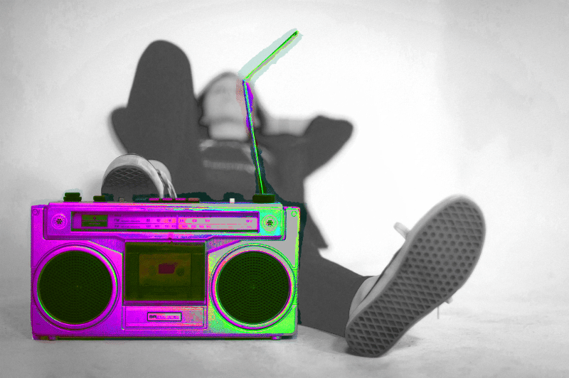
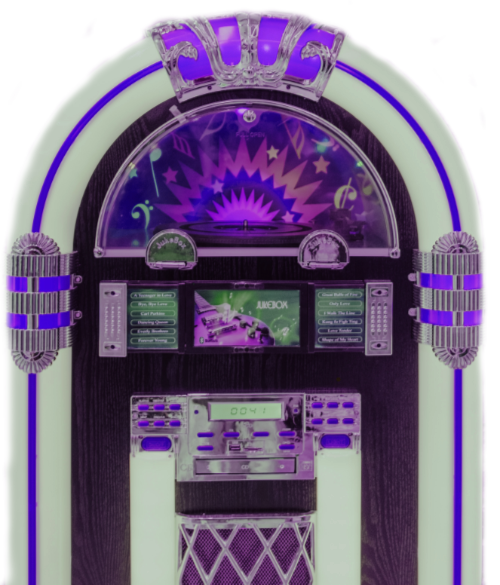
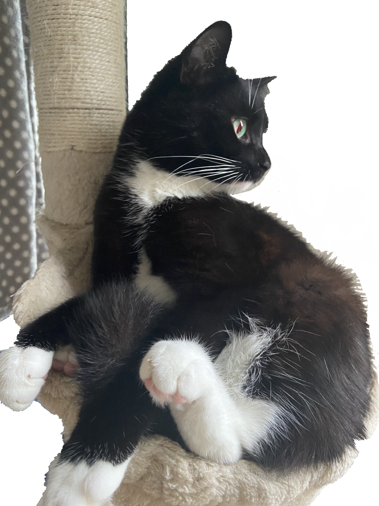
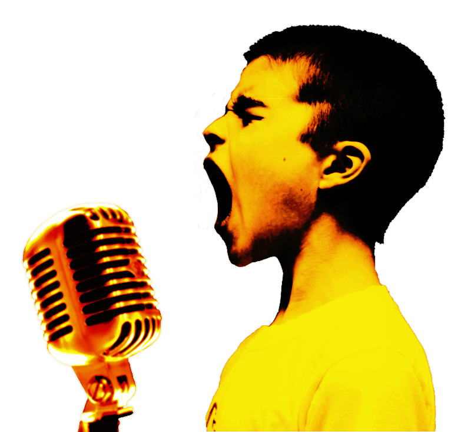
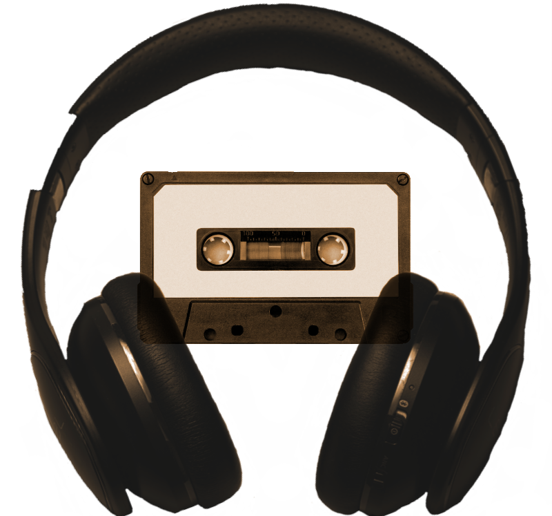

Edited photos
Colour radio
I edited this photo so it looked like the radio was really bright and the background was black and white. The original image was standard colour.
- I used the selection tool to focus on just the radio – it was particularly difficult around the antenna, but I reduced the size of the tool and zoomed in so I could focus on smaller areas.
- To make the radio stand out, I used the Transform panel to revert the hue and then use the channel mixer to edit until I was satisfied with the colour.
- I then turned the rest of image black and white by using the Transform panel and selecting default black and white.
When I exported, I used GIF, which can be used on images with limited colour. I wanted to demonstrate its ability outside of animation.
Stand out guitar
I wanted the guitar to stand out more than the background.
- Deciding on achieving this with brightness, I first used the selection tool and focused on the guitar.
- Now that one piece of the image was selected, I could use the Transform panel to control the brightness. I also adjusted the contrast to 100% to make it stand out even more
When I was ready to export, I decided to do so in JPEG, because there weren't too many colours here, which means when the file was compressed to reduce the file size (as all JPEG images are), the colour wouldn't be affected negatively.
Jukebox
The original picture, which I obtained using Unsplash, had a brick background. I know I wanted to remove that to focus on the Jukebox.
- I used the masking technique to remove the background and create neat edges. I found when I used the selection tools, it was removing certain pieces of the jukebox that I wanted to keep.
- Once I masked the background, I inverted the hue using the Colour Adjustment HSL panel, then selected purple as the main colour to match the theme of my website.
- I also cropped the image and resized it to 500px because I would only be using it as a decorative image rather than a large background, so didn’t need to extra size.
I exported as PNG, which is ideal for transparent backgrounds. PNG is also known as the lossless format and, as this image has a lot vibrant colours, I did not want to lose that.
Logan
I took the picture of my cat using my iPhone. Cats are known for their distinct eyes, so I knew I wanted to focus on them during my edits.
- I first used the selection tool to remove most of the background. However, as Logan's fur has white patches, the automation was cutting out some of these as well. To avoid this, I moved over to the masking tool, which is easier to use for the more precise areas.
- To focus on the colours of his eyes, I used the selection tool. I then used the colour panel to add more green and make them appear 'other worldly'.
When I exported, I chose PNG-8, because there are not too many contrasting colours colours, which meant it could be saved in a smaller file size.
Singing boy
This image involved the most work, as I used two separate images. The original image of the boy was black and white, with a solid background and a different microphone. The theme of my site is more 'retro', so I decided on a different microphone and to change the colour.
- To start with, I edited the image of the microphone. First, I remove the background using the selection tool so I could easily transfer it over to the image of the singing boy.
- I needed to flip the microphone to the other side of the frame so it would fit naturally with the image with the boy singing image. First, I navigated to Document > Flip horizontally, so the microphone appear on the other side of the frame. I then used the selection tool while holding command + shift to resize so it was a little bit smaller and moved to the bottom of the frame.
- Moving to the boy singing, I used the selection tool to remove most of the background and then the masking tool to remove the hard to reach places.
- Separately, I re-coloured both the microphone and boy (who was black and white) and selected the fire preset.
- Before moving the microphone to the image of the boy singing, I wanted to make the microphone appear as the same quality as the boy – the microphone seemed crisper. To achieve this, I used the Effects panel to add a slight blur.
- When the images were combined by using the placement tool, I resized it to 800px because it was originally 4000px, which was excessive as I only planned to use it in a small section on a header.
I exported as PNG, which is ideal for transparent backgrounds. PNG is also known as the lossless format and, as this image has a lot vibrant colours, I did not want to lose that.
Headphones and tape
For this, I combined two images again.
- I used the selection brush tool and then masking to cut out the headphones.
- From the original background of the headphones, there was a yellow hue, so I used the transform panel to give it a higher contrast and less brightness.
- Moving onto the image of the casette, I used the selection to cut out the cassette and give it a transparent background. I didn't also need to use the masking tool, as the shape of the cassette was quite uniform and easy for the automation to detect.
- I used the placement tool to place the headphones into the cassette image. I resized and rotated the image while placing.
- The headphones stood out a little more than the cassette, so I reduced the opacity to 90% so it looked a bit more blended.
- To go with the retro theme of my website, I used the Transform panel to re-colour to Course Sepia.
When I exported, I chose PNG to keep the background transparent. I could have used GIF, but FIG only supports one level of transparency, and both of the images were transparent.
Animated GIF

To create this GIF, I found an image of a record disc on Unsplash. I knew I wanted to make it look as though it was spinning for the actual animation and I also wanted it to have a transparent background.
- First, I knew that I didn't want to keep the original size as it was over 3000 px, which was rather large for the purpose of hosting it on a small section of a website. I resized the image by selecting Document > Resize document from the toolbar.
- To make it transparent, I used the selection brush tool as the shame was a circle and wouldn't be hard for the automation to select the right areas.
- Once the background was deleted, I created a new layer and used the Transform panel so I could rotate the image 45 degrees. Before rotating, however, I set the focus area to the point in the middle so that it would rotate from the middle instead of the top-left corner.
- I created 19 layers in total, each time rotating another 45 degrees until it return to its originally position.
I exported all of the layers as PNG, as PNG works exceptionally well with images that have a transparent background. I then moved over from Affinity Photo to GIMP to create the animation by opening all of the layers and exporting as a GIF and making sure 'As animation' was selected in the pop up.